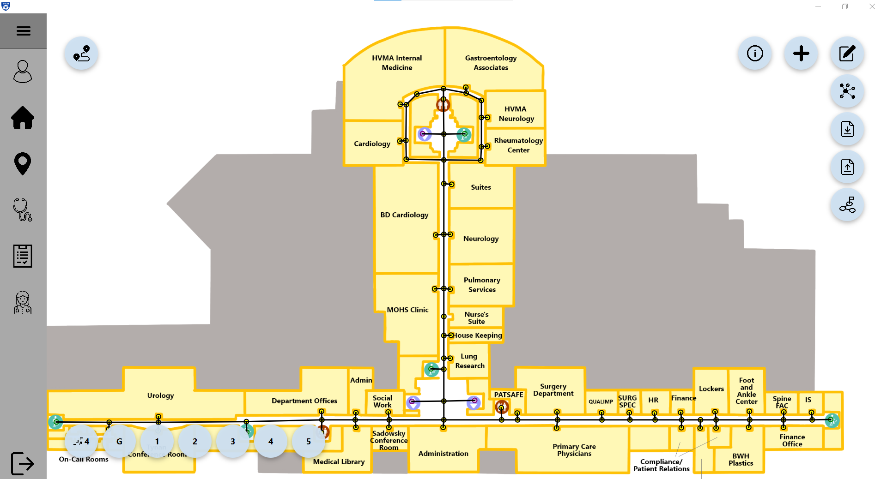
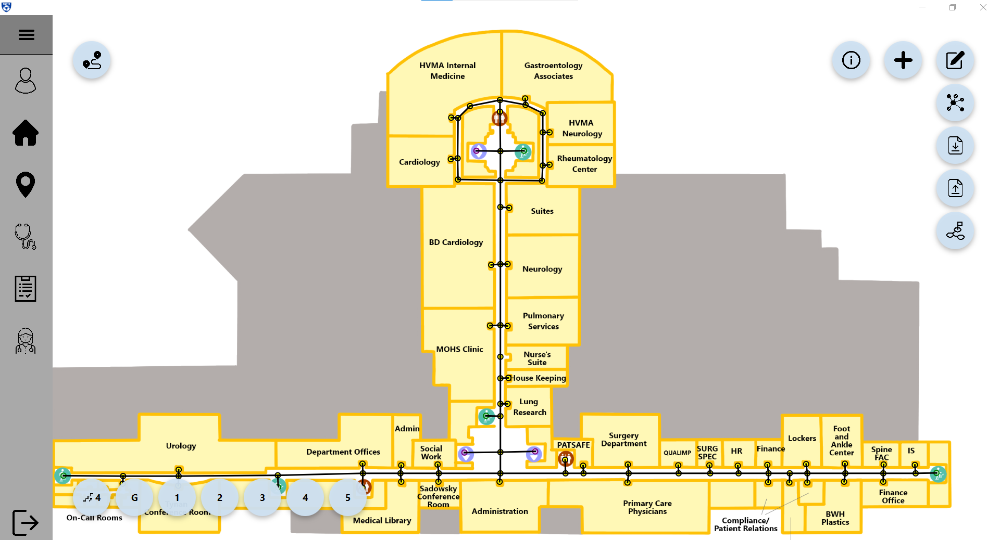

Some relevant projects and games I've worked on over the last few years.
Games
Robot Rampage
Released: April 2023
Developed: September 2022 - April 2023
Tools Used:
- Unity 2021 LTS
- Visual Studio 2022
- Blender
- Gimp
Programming Languages: C#, ShaderLab, HLSL, Python
Links: Game Source Code (GitHub), Published Report
About
Robot Rampage is a multi-perspective, retro-style shooter. Playing as Gompei the goat, you must fend off rogue robots roaming the massive tunnel network underneath campus.
Robot Rampage was developed as part of research about the effects of latency and jitter on user experience in cloud game streaming. It was designed with multiple perspectives and other varying parameters to change aspects of difficulty. The game was used in a user study looking at how combinations of these certain game elements and different amounts of latency and jitter impacted the users experience while playing.
The design process for Robot Rampage was more intensive and front-loaded than you might expect of a game of this scope. This is because we had to accomodate many different highly specific constraints for the purpose of the user study, making sure it would be effective for gathering relevant data.
After research and design, some of the main things I was responsible for during development include:
- Endless procedural map generation
- Switching between first-person, third-person, and overhead camera perspectives
- Reading and loading game settings from JSON files
- Recording and saving relevant gameplay data to files
- Designing and importing rooms from Blender
- Integrating different levels of difficulty
- Integrating pre-made 3D models, textures, and animations
Planet of the Ants
Released: May 2022
Developed: March - May 2022
Tools Used:
- Unreal Engine 4
- Perforce
Programming Languages: Unreal Engine Blueprints, C++
Links: itch.io
About
Planet of the Ants is a real-time, isometric strategy game, where you control a colony of ants as it gathers resources, makes units, and expands. Fight against another colony until you kill their Queen, or they kill yours! The game takes place in a hex-tile-based map with each side having access to several types of units and buildings that generate different resources used to recruit more units.
The game design was largely a collaborative effort by our five team members (two artists and three programmers). I was responsible for most of the AI systems such as implementing pathfinding, many of the unit interactions, and opponent behavior. I also integrated many of the art assets into the game and helped resolve many of the technical issues related to importing and using assets in Unreal 4.
Death Spell


Released: March 2022
Developed: February - March 2022
Tools Used:
- Photoshop
- The Game Crafter
Links: Death Spell on GameCrafter, Full Game Rules
About
Death Spell is a fast-paced card game for 2-4 players, where 2 teams of adventurers have been cursed with a volatile spell and must compete to stay alive. Players pass around the death spell as it counts down every turn. Each player has a unique ability as well as cards they can play from a shared deck. You win if your team avoids death while the opposing team succumbs to the spell.
Our team of four members collaborated on all the elements of game design and iteration via extensive playtesting. For the actual production, I helped to create and refine the full rules, and I visually designed and made many of the final cards using Photoshop.
Other Projects
Brigham & Women's Hospital App
 

Released: March 2021
Developed: January - March 2021
Tools Used:
- IntelliJ IDEA
- JavaFX
- Scene Builder (for JavaFX)
- Gradle
- Trello
Programming Languages: Java, FXML
Links: Source Code (GitHub), User Manual
About
Over the course of 7 weeks, I worked in a team with nine other students using agile methodology throughout 4 major sprints. We also held daily scrums and created and assigned user stories at the beginning of each sprint.
The application was intended primarily to be used on kiosks at the Brigham and Women's Faulkner Hospital and contains three major components which were influenced by surveys and interviews of potential users:
- A pathfinding system that shows users the fastest route to their chosen destination.
- A map editor allowing hospital admins to add, edit, or delete locations from the existing map.
- A request service that allows employees to request hospital services when and where necessary.
The app also contains several more features and extensions of the above core features. These include a sharing feature, allowing users to text or email the route to themselves or scan a QR code, and a protype thermometer integration to check if a patient has a fever before entering the hostpital.
Some key components I was responsible for include:
- Gathering user studies and creating user stories at the beginning of each sprint.
- Creating and integrating several pathfinding algorithms into the route finder.
- Implementing most features of the map editor (displaying nodes, adding, editing, and deleting nodes and edges, etc.).
- Implementing most features of the route finder (entering the user's location and destination, displaying the route on the map, zooming and panning of the map, displaying different floors, etc.).
- The addition of a 'dino game' for the user to play while waiting for approval to enter the hospital.
Music Genre Classification Models
Developed: March - May 2023
Tools Used:
- Visual Studio Code
- Various Python libraries, including:
spotipy, soundfile, scipy, librosa(for collecting data + features)pandas, sklearn, xgboost, tensorflow(for making models)
Programming Languages: Python
Links: Source Code (GitHub), Final Report
About
This project aimed to create a machine learning model that could accurately classify 30-second clips of songs into one of 10 genres. We used two different methods of extracting features from the song data. The first was numerical features (38 commonly cited numerical aspects of music such as zero-crossing rate, spectral centroid, and mel-frequency cepstral coefficients), while the second was creating a Mel-Spectrogram from each song clip.
Using ~1600 30-second song clips from Spotify as our data set, we made a number of models (including KNN, Random Forest, and XGB) on the numerical data, with the XGB model achieving 90.7% accuracy. Then, with the Mel-Spectrogram images, we trained a CNN as an image classifier, essentially categorizing the songs by the visual characteristics that appeared in the Mel-Spectrograms, which achieved between 91% and 95% cross-validation accuracy.
In addition to researching approaches and good candidates for features, I was primarily responsible for both turning the song clips into usable Mel-Spectrograms, as well as creating, training, and adjusting the CNN used to classify those spectrograms.